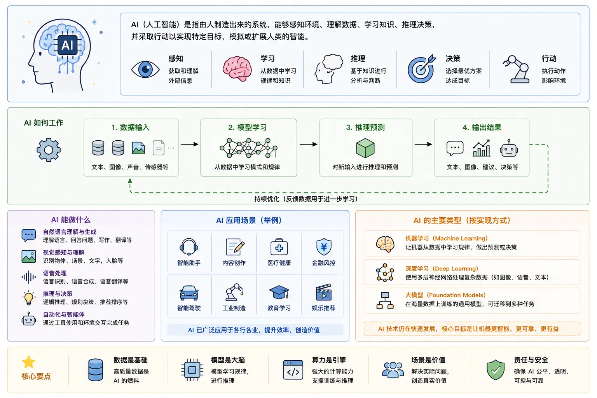
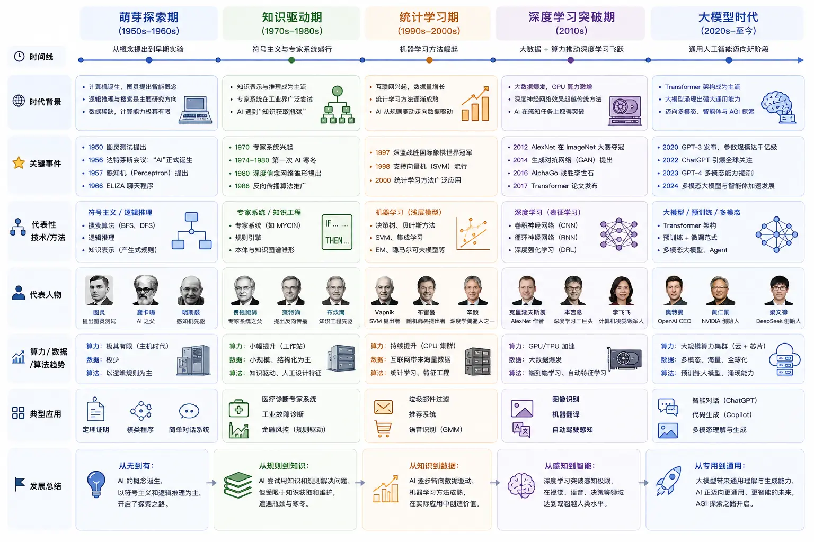

AI 简介
想象一下这个场景：
早上你打开手机，相册自动把昨晚拍的照片按人物和场景分好了类。
-
上班路上你对着手机说了句话，导航就帮你规划好了避开拥堵的路线。
-
到了工位，你在对话框里敲了一行字，AI 帮你生成了整篇周报的初稿。
这些场景在五年前还像科幻，现在已经成了日常，AI 不是未来，它已经嵌入了你每天使用的产品里。
2022 年底 ChatGPT 的出现是一个分水岭：
在此之前，AI 是程序员和研究者的事。
-
在此之后，AI 变成了每个人都能直接使用的工具。
人工智能的定义
用大白话说：人工智能（Artificial Intelligence，简称 AI）是让计算机具备类似人类智能行为的技术。
这里说的智能行为包括：看懂文字、听懂语音、识别图片、做出决策、从经验中学习。
英文缩写 AI 读作 A-I（两个字母分开读），全称 Artificial Intelligence。
AI 能做什么
下面这些能力，今天的 AI 已经相当成熟：
| 能力 | 典型应用 | 你用过吗 |
|---|---|---|
| 语言理解与生成 | 翻译、写作、总结文章、回答问题 | ChatGPT、Claude |
| 图像识别 | 人脸解锁、扫描文档、医学影像分析 | 手机相册分类、车站闸机 |
| 语音交互 | 语音转文字、语音助手 | Siri、小爱同学、输入法语音 |
| 内容生成 | AI 绘画、视频生成、音乐创作 | Midjourney、Suno |
| 代码辅助 | 代码补全、Bug 修复、自动生成代码 | GitHub Copilot、Cursor |
AI 不能做什么
知道 AI 的边界，比知道它的能力更重要。
AI 不会真正理解任何东西——它只是在做概率计算，你说"今天天气真好"，它不知道"好"是什么感觉，它只知道这句话后面通常接什么词。
AI 没有意识、没有情感、没有自己的目标，它不会想要做任何事。
AI 有会幻觉，就是会一本正经地编造不存在的事实、人名、论文、数据，因为它本质上是预测下一个词，而不是查证事实。
AI 对没见过的新情况缺乏判断力，如果训练数据里没有类似场景，它的表现可能很糟糕。

记住：AI 是强力助手，不是可信权威。
涉及医疗、法律、投资等高风险决策，AI 的输出只能参考，不能作为最终依据。
AI 发展简史
AI 不是突然冒出来的，它的历史超过 70 年，经历了三轮大起大落。
第一次浪潮：符号主义（1950s–1980s）
1956 年，一群科学家在达特茅斯学院开会，人工智能这个词被正式提出。
当时的主流思路很简单：把人类专家的知识写成一条条规则，存进计算机，遇到问题时按规则推理。这种思路叫专家系统。
比如一个医疗诊断专家系统，内部存着几千条规则：如果病人发烧且咳嗽，则可能是感冒、如果发烧超过 39 度且持续三天，则建议验血。
问题在于：真实世界的规则是写不完的，你写了五千条规则，病人来了个第六千种症状组合，系统就不知道怎么办了。
而且，修改规则极其痛苦——加一条新规则可能和已有的几百条规则冲突。
1980 年代末，人们意识到这条路走不通，AI 进入第一次寒冬。
第二次浪潮：机器学习崛起（1990s–2010s）
研究者换了一个思路：不再让人写规则，而是让机器自己从数据里找规律。
举个例子：要识别垃圾邮件，不再写如果包含中奖二字就是垃圾邮件这种规则，而是给机器看一万封已标注的邮件（五千封正常、五千封垃圾），让算法自己找出垃圾邮件通常长什么样。
这一时期诞生了支持向量机（SVM）、随机森林、逻辑回归等经典算法，它们在垃圾邮件过滤、信用卡欺诈检测、商品推荐等场景效果很好。
但有一个瓶颈：特征需要人来设计。比如做图像识别，你得先人工提取"边缘"、"颜色分布"、"纹理"等特征，然后才能喂给算法。人对特征的提取能力，决定了模型的上限。
第三次浪潮：深度学习与大模型（2010s–至今）
2012 年，一个叫 AlexNet 的深度神经网络在图像识别比赛 ImageNet 上大幅碾压传统方法，深度学习时代正式开启。
深度学习的核心突破是：连特征也不用人工设计了，模型自己从原始数据里一层层地学。
2017 年，Google 发表论文《Attention Is All You Need》，提出 Transformer 架构。
2022 年 11 月，OpenAI 发布 ChatGPT，两个月用户破亿，AI 真正走向大众。
2023 年至今，GPT-4、Claude、Gemini 等大模型持续迭代，多模态、AI Agent、推理模型等新方向不断涌现。
三次浪潮的核心脉络，一句话总结：
| 浪潮 | 核心思路 | 谁在干活 | 代表事件 |
|---|---|---|---|
| 第一次（1950s–1980s） | 人写规则，机器执行 | 程序员写规则 | 1956 达特茅斯会议 |
| 第二次（1990s–2010s） | 机器从数据学规律 | 人设计特征，算法学规律 | 1997 深蓝击败国际象棋冠军 |
| 第三次（2010s–至今） | 深度网络 + 海量数据 + 大算力 | 模型连特征都自己学 | 2022 ChatGPT 发布 |
AI 的演进路径：规则驱动 → 数据驱动 → 深度学习 → 大模型 → 智能体，更细一点，我们可以分为 5 个阶段：
- 1950s：人们提出一个问题——机器能像人一样思考吗？
- 1960s–1980s：尝试把知识和规则写进机器（符号主义、专家系统），效果有限。
- 1990s–2000s：不再手写规则，让机器从数据中学习（机器学习）。
- 2010s：深度学习崛起，神经网络依靠海量数据和算力取得突破。
- 2020s：大模型时代到来，一个模型开始具备通用能力（聊天、写作、编程、推理）。
- 未来：AI 正从回答问题走向自主完成任务（Agent、AGI）。

三个容易混淆的概念：AI、ML、DL
AI（Artificial Intelligence，人工智能）、ML（Machine Learning，机器学习）、DL（Deep Learning，深度学习）三者常被媒体混为一谈，但三者定义并不等同，但它们不是一回事。先看一张关系图：

包含关系：AI ⊃ ML ⊃ DL
-
人工智能（AI）是最大的圈，凡是用机器模拟智能行为的技术都算 AI。
-
机器学习（Machine Learning，ML）是 AI 的一个子集，特指从数据中自动学习的方法。
-
深度学习（Deep Learning，DL）是 ML 的一个子集，特指基于多层神经网络的方法。
不是所有的 AI 都是 ML，不是所有的 ML 都是 DL。
用一个例子说清楚三者的区别
假设要做一个判断邮件是否是垃圾邮件的程序，三种思路对应三个层次：
实例
# 思路一：规则法（AI，但不属于 ML）
# 程序员手写规则，没有"学习"过程
# ============================================
def is_spam_by_rules(email_text: str) -> bool:
"""用关键词规则判断垃圾邮件——纯人工规则，没有学习"""
# 以下关键词任意命中一个，就判定为垃圾邮件
spam_keywords = [
"恭喜中奖",
"免费领取",
"点击领取",
"限时优惠",
"runoob 大礼包", # 测试用，实际场景中可替换
]
for keyword in spam_keywords:
if keyword in email_text:
return True
return False
# 测试：有一封邮件内容如下
test_email = "恭喜你获得 runoob 大礼包，点击领取！"
result = is_spam_by_rules(test_email)
print(f"规则法判断结果：{'垃圾邮件' if result else '正常邮件'}")
# 输出：规则法判断结果：垃圾邮件
规则法的优点是简单直接，缺点是：规则写不完、写不全。如果垃圾邮件换了个说法，比如"恭贺阁下喜获大奖"，规则就漏了。
实例
# 思路二：经典机器学习（ML，但不属于 DL）
# 从历史数据中自动学习规律，不需要手写规则
# ============================================
def train_simple_classifier(emails: list, labels: list):
"""训练一个最简单的机器学习分类器
思路：统计每个词在垃圾邮件和正常邮件中出现的频率，
用频率差来判断新邮件"""
# 统计每个词在两类邮件中出现的次数
spam_word_count = {} # 词在垃圾邮件中出现的总次数
ham_word_count = {} # 词在正常邮件中出现的总次数
spam_total = 0 # 垃圾邮件总词数
ham_total = 0 # 正常邮件总词数
for email_text, label in zip(emails, labels):
words = email_text.split()
for word in words:
if label == "spam":
spam_word_count[word] = spam_word_count.get(word, 0) + 1
spam_total += 1
else:
ham_word_count[word] = ham_word_count.get(word, 0) + 1
ham_total += 1
# 返回学习到的统计信息（这就是"模型"）
return {
"spam_word_count": spam_word_count,
"ham_word_count": ham_word_count,
"spam_total": spam_total,
"ham_total": ham_total,
}
def predict(model: dict, email_text: str) -> str:
"""用学习到的模型预测新邮件"""
words = email_text.split()
spam_score = 0.0 # 垃圾邮件得分
ham_score = 0.0 # 正常邮件得分
for word in words:
# 计算这个词在垃圾邮件中出现的概率（加平滑避免除零）
spam_prob = (model["spam_word_count"].get(word, 0) + 1) / (model["spam_total"] + 1)
ham_prob = (model["ham_word_count"].get(word, 0) + 1) / (model["ham_total"] + 1)
spam_score += spam_prob
ham_score += ham_prob
return "spam" if spam_score > ham_score else "ham"
# 训练数据：4 封已标注的邮件
emails = [
"恭喜中奖 免费领取 大礼包", # 垃圾
"限时优惠 点击领取 runoob 礼包", # 垃圾
"明天开会 记得带 报告", # 正常
"周末 一起 吃饭 有空 吗", # 正常
]
labels = ["spam", "spam", "ham", "ham"]
model = train_simple_classifier(emails, labels)
# 预测新邮件
new_email = "恭喜你获得大奖 快来领取"
result = predict(model, new_email)
print(f"ML 方法判断结果：{'垃圾邮件' if result == 'spam' else '正常邮件'}")
# 输出：ML 方法判断结果：垃圾邮件
ML 方法不再需要手写规则，它从数据中自动学习。
但它仍然需要人设计"特征"——在这个例子里，特征就是"用词频来判断"。如果特征设计得不好，模型效果就上不去。
实例
# 思路三：深度学习（DL，ML 的子集）
# 用多层神经网络，连特征也让模型自己学
# 这里用伪代码 + 注释说明原理，不依赖任何框架
# ============================================
# 深度学习做垃圾邮件分类的思路：
# 1. 把每个词转换成一个向量（一串数字），这一步叫"词嵌入"
# 2. 把这些向量送进一个多层神经网络
# 3. 每一层网络自动提取越来越抽象的特征
# 4. 最后一层输出"垃圾"或"正常"的概率
# 下面是一个概念性的三层神经网络结构：
class SimpleNeuralNetwork:
"""概念演示：一个三层神经网络的结构（不包含训练逻辑）"""
def __init__(self, input_size: int, hidden_size: int, output_size: int):
"""初始化网络各层权重"""
import random
# 第 1 层：输入 → 隐藏层（将输入特征做一次非线性变换）
self.w1 = [[random.random() for _ in range(hidden_size)]
for _ in range(input_size)]
# 第 2 层：隐藏层 → 输出层（将抽象特征映射到最终分类）
self.w2 = [[random.random() for _ in range(output_size)]
for _ in range(hidden_size)]
def forward(self, x: list) -> list:
"""前向传播：输入数据经过网络得到输出"""
# 第一层变换
hidden = [sum(x[i] * self.w1[i][j] for i in range(len(x)))
for j in range(len(self.w1[0]))]
# ReLU 激活函数（负值变 0，正数不变）
hidden = [max(0, h) for h in hidden]
# 第二层变换得到最终输出
output = [sum(hidden[i] * self.w2[i][j] for i in range(len(hidden)))
for j in range(len(self.w2[0]))]
return output
# 假设每个词已经转换成了 100 维的向量（由词嵌入层自动完成）
# 输入 100 维向量 → 隐藏层 64 个神经元 → 输出 2 个值（垃圾概率、正常概率）
model = SimpleNeuralNetwork(input_size=100, hidden_size=64, output_size=2)
print("三层神经网络结构已创建：100 → 64 → 2")
# 输出：三层神经网络结构已创建：100 → 64 → 2
三种思路的对比：
| 思路 | 谁在干活 | 所属范畴 | 优缺点 |
|---|---|---|---|
| 规则法 | 程序员手写规则 | AI（非 ML） | 简单直接，但规则写不完，维护困难 |
| 经典 ML | 算法从数据学规律，特征由人设计 | ML（非 DL） | 数据量小时效果好，可解释性强 |
| 深度学习 | 连特征也让模型自己学 | DL | 海量数据下效果好，但需要大量算力 |
当有人说"我们公司在做 AI"，你可以问一句："你们用的是规则、传统机器学习，还是深度学习？"——这能帮你快速判断对方的技术路线。
弱 AI、强 AI、超级 AI
除了按技术路线分类，AI 还可以按"智能水平"分成三个等级。
弱 AI（Narrow AI）——已经实现
只能在特定任务上表现出色，切换任务就抓瞎。
AlphaGo 下棋能赢世界冠军，但让它写一首诗，它不会。
ChatGPT 聊天很厉害，但给它一张医学影像让它诊断，它不行。
今天我们能接触到的所有 AI 产品，都是弱 AI。
"弱"不是指能力弱，而是指范围窄——它只在一个或几个特定领域厉害。
强 AI（AGI，通用人工智能）——尚未实现
能像人一样在任意领域学习和工作。不需要为每个新任务单独训练，看几个例子就能上手。
AGI 是 OpenAI、Anthropic、Google DeepMind 等公司的终极目标。
目前还没有公认的 AGI 出现。什么时候能实现？乐观估计 5-10 年，悲观估计 50 年以上，没人说得准。
超级 AI（ASI，超级人工智能）——纯理论
在所有领域全面超越人类智能。能做出人类做不到的科学发现，解决人类理解不了的问题。
这是科幻小说里常见的设定，但距离现实还非常遥远。
三个等级的关系：
| 等级 | 能力范围 | 当前状态 | 例子 |
|---|---|---|---|
| 弱 AI | 单一领域 | 已大量存在 | ChatGPT、人脸识别、AlphaGo |
| 强 AI（AGI） | 通用领域，媲美人类 | 尚未实现 | — |
| 超级 AI（ASI） | 全面超越人类 | 纯理论概念 | — |
常见误解纠正
关于 AI，有两个误解流传最广，值得专门说清楚。
误解一：AI 有意识
AI是没有意识的。
不要被 AI 的语气欺骗，它能写出让你落泪的诗，但它对那首诗没有任何感觉，甚至不知道落泪是什么意思。
当你和 ChatGPT 聊天，它说"我觉得"、"我认为"时，没有任何"觉得"或"认为"在发生。
AI 在做的事情，本质上只有一个：根据前面的所有文字，预测下一个最可能出现的字。
打个比方：你输入"今天天气真"，它预测下一个字是"好"（概率 85%）、"热"（8%）、"冷"（5%），然后选了"好"。接着它根据"今天天气真好"，预测下一个字是"啊"……就这样一个字一个字地生成。
整个过程没有主观体验，没有自我意识，没有意图，它只是模仿人类语言的概率分布。

误解二：AI 会取代人类
更准确的说法：AI 不会取代人类，但会用 AI 的人会取代不会用 AI 的人。
历史已经反复验证这个规律：
-
计算器出现后，算盘手消失了，但数学家和工程师的工作效率翻了十倍。
-
搜索引擎出现后，图书馆管理员变少了，但每个人获取知识的能力跃升了几个量级。
-
AI 也一样：重复执行的、规则明确的工作会被替代，但需要判断力、创造力、人际协作的工作会被增强。
对个人来说，最重要的不是恐惧 AI，而是学会与 AI 协作。

点我分享笔记